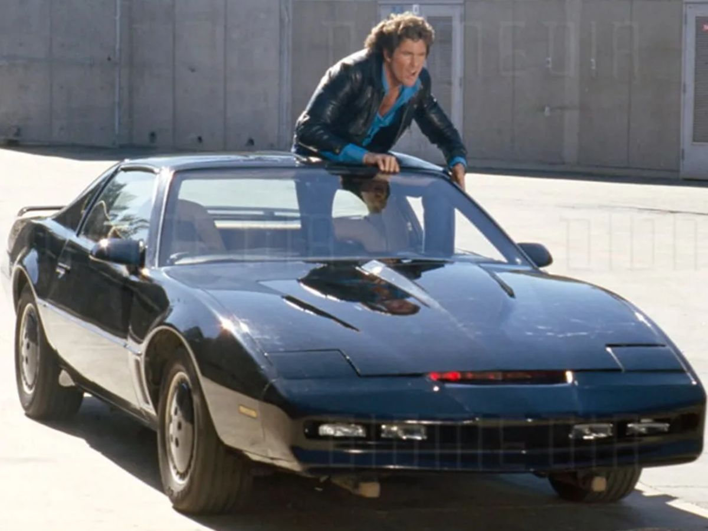

A Supermáquina
Introdução
A Supermáquina, também conhecida como Knight Rider, foi uma das séries de televisão mais icônicas dos anos 80. Criada por Glen A. Larson, a série estreou em 1982 e rapidamente conquistou uma legião de fãs ao redor do mundo. O protagonista do show era o ator David Hasselhoff, que interpretava Michael Knight, um policial ferido que se torna um agente secreto trabalhando para uma fundação secreta de combate ao crime.
No entanto, o grande destaque da série era o veículo com inteligência artificial conhecido como K.I.T.T. (Knight Industries Two Thousand). K.I.T.T. era um carro futurista e altamente avançado, baseado em um Pontiac Firebird Trans Am preto. O veículo era equipado com tecnologias incríveis para a época, incluindo um computador avançado, comunicação de voz, sensores especiais, turbo-impulso e até mesmo a capacidade de se auto-conduzir.
A relação entre Michael Knight e K.I.T.T. era uma das partes mais cativantes da série. O carro falante e inteligente se tornou um personagem por si só, com uma personalidade única e uma voz sintetizada inconfundível. K.I.T.T. era capaz de ajudar Michael em suas missões, fornecendo informações valiosas, resolvendo problemas técnicos e até mesmo salvando-o em momentos de perigo.
Além das incríveis habilidades tecnológicas de K.I.T.T., a série também explorava temas como justiça, heroísmo e amizade. Michael Knight era um herói corajoso e destemido, sempre disposto a lutar contra o crime e proteger os inocentes. Ele enfrentava vilões perigosos e complexos, muitas vezes colocando sua própria vida em risco para fazer o que era certo.
A Supermáquina teve um impacto significativo na cultura pop dos anos 80 e se tornou um ícone da época. A série foi um enorme sucesso, com quatro temporadas e um total de 90 episódios. Ela também gerou uma série de produtos licenciados, como brinquedos, jogos e até mesmo um álbum de música com a trilha sonora da série.
Mesmo décadas após o seu lançamento, A Supermáquina continua a ser amada e reverenciada pelos fãs. Sua mistura de ação, aventura, tecnologia futurista e um carro inteligente e carismático tornou-a um marco na história da televisão. A série deixou um legado duradouro e provou que os anos 80 foram uma época de ouro para as séries de televisão, deixando uma marca indelével na cultura pop.